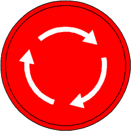

Not-Halt auslösen

GEFAHR
Extreme Belastung der Maschine unter Last bei Not-Halt!
Kippen der Maschine, Versagen der Struktur.
Not-Halt ausschließlich zum Stoppen der Maschine in einer Notsituation verwenden. |

Hinweis
Not-Halt an Fernsteuerung Betrieb funktioniert ausschließlich, wenn Fernsteuerung Betrieb aktiv ist und Steuerung übernommen hat.

Hinweis
Not-Halt an Fernsteuerung Montage (Kabel) funktioniert ausschließlich, wenn Fernsteuerung Montage (Kabel) eingesteckt ist und mit Schalter an Steckdose freigegeben wurde.

Hinweis
Not-Halt an Fernsteuerung Montage (Funk) funktioniert ausschließlich, wenn Fernsteuerung Montage (Funk) aktiv ist und der eingesteckte Empfänger mit Schalter an Steckdose freigegeben wurde.

Hinweis
Not-Halt an Fernsteuerung Notbetrieb funktioniert ausschließlich, wenn Fernsteuerung Notbetrieb eingesteckt ist.

Fig. 4452: Not-Halt an Fernsteuerung Montage (Kabel)
Fig. 4452: Not-Halt an Fernsteuerung Montage (Kabel)
Not-Halt drücken. |
Bewegungen der Maschine sind gestoppt. |
Wenn Not-Halt während dem Laden der Hochvoltbatterien ausgelöst wird:
Ladevorgang ist unterbrochen. |